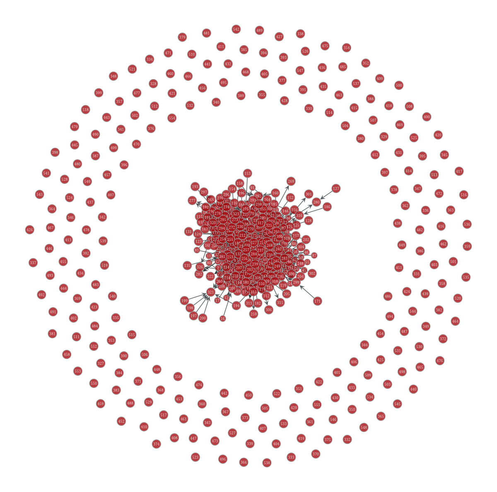
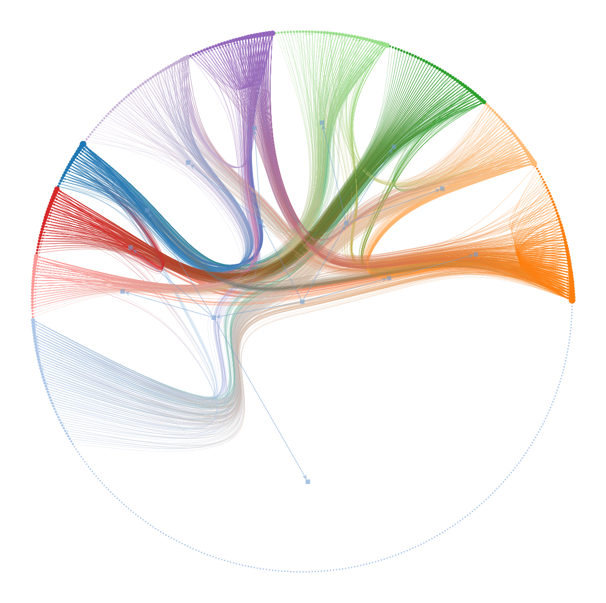
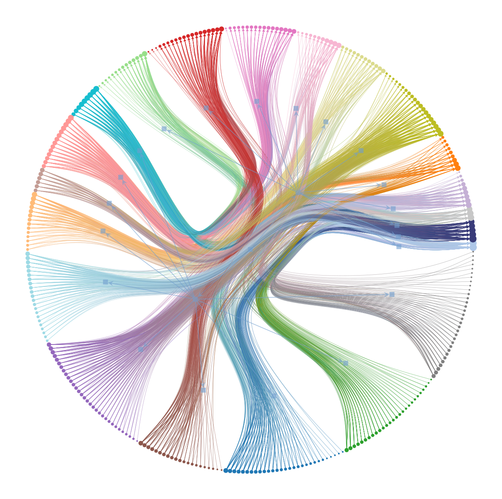
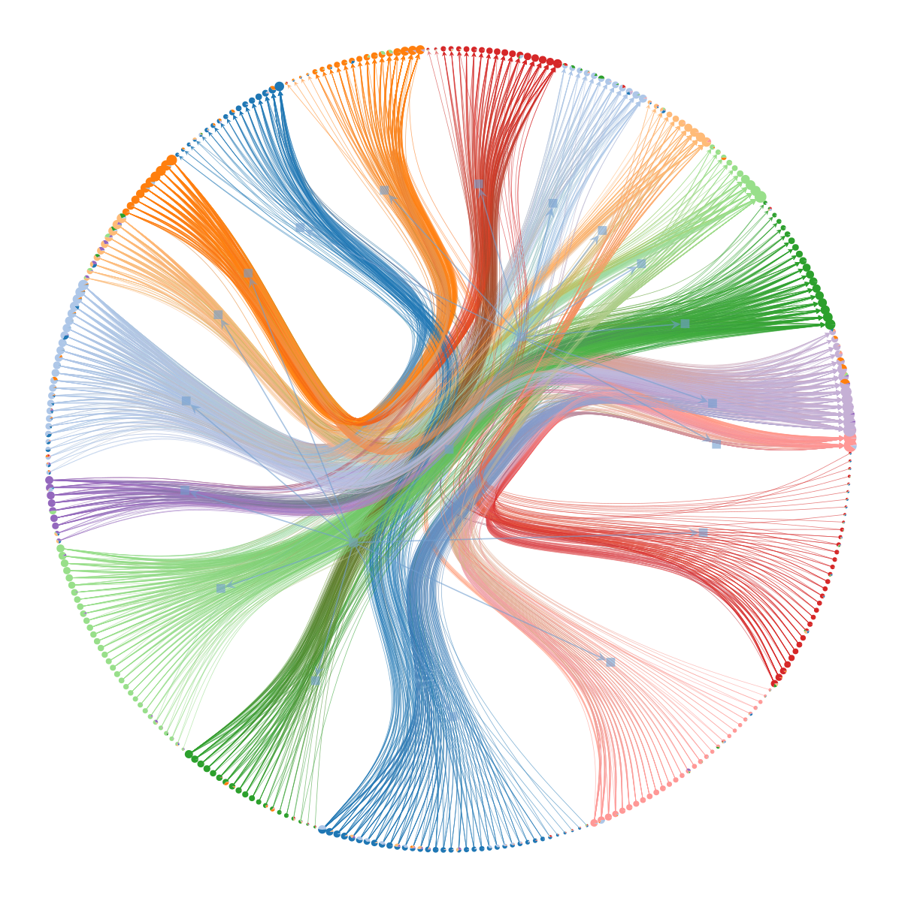

from graph_tool.all import *
import pandas as pd
import numpy as nphadfield_df, nz_df = pd.read_csv("hadfield.csv"), pd.read_csv("nz.csv")def to_graph(df):
num_species = max(max(df.source), max(df.target))
g = gt.Graph()
nodes = [g.add_vertex() for _ in range(num_species)]
for (r,row) in hadfield_df.iterrows():
i, j = row['source']-1, row['target']-1
g.add_edge(nodes[i],nodes[j])
return gg = to_graph(nz_df)graph_draw(g, vertex_text=g.vertex_index)
<VertexPropertyMap object with value type 'vector<double>', for Graph 0x7f1cddf16e50, at 0x7f1cddf67190>state = gt.inference.minimize_nested_blockmodel_dl(g)state.draw()
(<VertexPropertyMap object with value type 'vector<double>', for Graph 0x7f1cddf16e50, at 0x7f1cdded7f40>,
<GraphView object, directed, with 570 vertices and 569 edges, edges filtered by (<EdgePropertyMap object with value type 'bool', for Graph 0x7f1cddece580, at 0x7f1cddf0ce80>, False), vertices filtered by (<VertexPropertyMap object with value type 'bool', for Graph 0x7f1cddece580, at 0x7f1cddee1310>, False), at 0x7f1cddece580>,
<VertexPropertyMap object with value type 'vector<double>', for Graph 0x7f1cddece580, at 0x7f1cddf0c2e0>)
state = gt.inference.minimize_nested_blockmodel_dl(g)
S1 = state.entropy()
for i in range(10000): # this should be sufficiently large
state.multiflip_mcmc_sweep(beta=np.inf, niter=10)
S2 = state.entropy()
print("Improvement:", S2 - S1)Improvement: -5.6772291099568974state.draw()
(<VertexPropertyMap object with value type 'vector<double>', for Graph 0x7f1d153f2dc0, at 0x7f1cde1d8d60>,
<GraphView object, directed, with 351 vertices and 350 edges, edges filtered by (<EdgePropertyMap object with value type 'bool', for Graph 0x7f1cddf0c220, at 0x7f1cddf5d940>, False), vertices filtered by (<VertexPropertyMap object with value type 'bool', for Graph 0x7f1cddf0c220, at 0x7f1cddf16460>, False), at 0x7f1cddf0c220>,
<VertexPropertyMap object with value type 'vector<double>', for Graph 0x7f1cddf0c220, at 0x7f1cddf28f10>)gt.inference.mcmc_equilibrate(state, wait=1000, mcmc_args=dict(niter=10))
# collect nested partitions
bs = []
def collect_partitions(s):
global bs
bs.append(s.get_bs())
# Now we collect the marginals for exactly 10,000 sweeps
gt.inference.mcmc_equilibrate(state, force_niter=1000, mcmc_args=dict(niter=10),
callback=collect_partitions)
# Disambiguate partitions and obtain marginals
pmode = gt.inference.PartitionModeState(bs, nested=True, converge=True)
pv = pmode.get_marginal(g)
# Get consensus estimate
bs = pmode.get_max_nested()
state = state.copy(bs=bs)
# We can visualize the marginals as pie charts on the nodes:
state.draw(vertex_shape="pie", vertex_pie_fractions=pv)
(<VertexPropertyMap object with value type 'vector<double>', for Graph 0x7f1d153f2dc0, at 0x7f1cddf0c700>,
<GraphView object, directed, with 348 vertices and 347 edges, edges filtered by (<EdgePropertyMap object with value type 'bool', for Graph 0x7f1cddf0c310, at 0x7f1cddf167c0>, False), vertices filtered by (<VertexPropertyMap object with value type 'bool', for Graph 0x7f1cddf0c310, at 0x7f1cddf166d0>, False), at 0x7f1cddf0c310>,
<VertexPropertyMap object with value type 'vector<double>', for Graph 0x7f1cddf0c310, at 0x7f1cddf16910>)